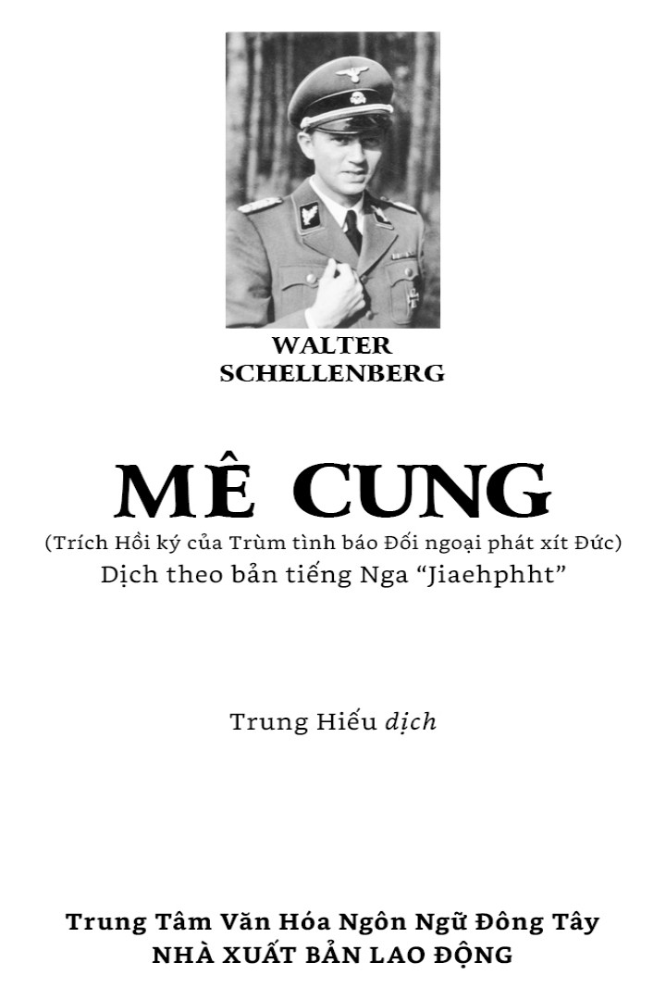

Những sự kiện dưới đây diễn ra sau ngày 1 tháng 9 năm 1939, ngày quân đội phát xít Đức tấn công xâm chiếm Ba Lan; các nước phương Tây như Anh, Pháp tuyên chiến với nước Đức, và cuộc Chiến tranh Thế giới thứ II bắt đầu.
Chiến tranh Thế giới thứ II đã đi qua hơn nửa thế kỷ, nhưng những hồi ức đẫm máu của sự kiện bi thảm đó vẫn hằn sâu trong ký ức nhân loại. Biết bao cuốn sách đã phơi bày, phân tích mọi mặt chính trị, kinh tế, quân sự của cuộc chiến tranh khốc liệt ấy. Riêng về mặt tình báo, chúng ta cũng đã được biết đến bao câu chuyện ly kỳ của những điệp viên Liên Xô, Anh, Mỹ, Pháp v.v… nổi tiếng thế giới, nhưng có lẽ trình bày vai trò của hoạt động tình báo, ảnh hưởng của nó tới tiến trình chiến tranh một cách trung thực và cuốn hút thì phải kể đến cuốn Hồi ký của Walter Schellenberg. Cuốn sách thật đáng được đọc và có thể được coi là một tập tài liệu quan trọng lịch sử tình báo, về hoạt động tình báo ở nước Đức quốc xã, một trong những hung thủ gây ra cuộc chiến nhất là sự việc lại được đặt dưới góc nhìn của một trong những nhân vật hàng đầu trong làng tình báo phát xít, nguyên là cục trưởng Cục Tình báo Đối ngoại của nước Đức quốc xã.
Khi bọn phát xít lên cầm quyền vào tháng 9 năm 1933, Schellenberg mới là một chàng trai 22 tuổi đang tuyệt vọng tìm kiếm việc làm trong tình trạng kinh tế kiệt quệ của một nước Đức thất trận trong Thế chiến thứ I. Ba năm trời học tại trường Đại học Tổng hợp Bonn, hết Khoa Y lại sang Khoa Luật, rốt cuộc cũng không đem lại cho chàng thanh niên một trình độ chuyên môn vững vàng nào. Giống như hàng nghìn sinh viên của các trường đại học Đức thời đó, Schellenberg chỉ còn cách trông cậy vào trí tuệ của bản thân, khi mà việc làm trong thời đó còn khó kiếm hơn sao trên trời. Giống như hàng ngàn người khác lâm vào hoàn cảnh đó, Schellenberg gia nhập Đảng Quốc xã không phải vì niềm tin, không phải vì chống đối, mà chỉ vì thấy đó là con đường triển vọng nhất để tiến thân. Để vận dụng học vấn đã thu nhận được một cách tốt nhất, Schellenberg cố len vào được hàng ngũ SS, được coi là đội ngũ tập hợp “những con người ưu tú nhất của nước Đức” thời đó, và tìm mọi cách để được vào làm việc ở SD - Cơ quan Tình báo và An ninh do Heydrich, một người trẻ tuổi khác cũng đang tìm cách ngoi lên trong chế độ phát xít, tổ chức và lãnh đạo.
Cho đến cuối con đường công danh của mình (kết thúc khi Schellenberg mới 35 tuổi cùng với sự sụp đổ của nước Đức phát xít), thế giới của Schellenberg là thế giới của tình báo và cảnh sát mật, một thế giới mà những điều xảy ra ở đó vượt quá sức tưởng tượng, nơi mà những hành vi nhân bản bình thường và lòng chân thành là của hiếm, nơi khó thể tin vào bất cứ ai, một thế giới mà trong đó sự dối trá, hối lộ, âm mưu, phản trắc và bạo lực là những điều xảy ra hàng ngày. Schellenberg đã đắm mình trong vầng hào quang, lãng mạn không vững chắc của thế giới gián điệp và mật vụ đó và đã thuật lại tất cả một cách chân thực.
Cuốn sách của Schellenberg là một bức tranh về chế độ quốc xã được mô tả bởi chính một người nằm trong tầng lớp lãnh đạo chóp bu của nó, như một chứng nhân lịch sử, nắm được mọi thông tin và trực tiếp thấy mọi điều xảy ra nơi trung tâm của quyền lực.
Để có thể đánh giá được cuốn sách một cách đầy đủ và hiểu được các sự kiện và nhân vật có lẽ cũng nên nói sơ qua vài nét về vị trí và ý nghĩa của cái tổ chức mật vụ mà Schellenberg đã tạo lập công danh cho mình thời đó - tổ chức SD hay Cục An ninh SS.
Tháng giêng năm 1929, khi Hitler bổ nhiệm Heinrich Himmler làm Thống chế đội SS, tổ chức này mới chỉ là đội bảo vệ riêng của Hitler và chỉ có hơn 300 người. Tới tháng giêng năm 1933 quân số của nó đã lên đến hơn 52 nghìn người và biến thành một đội quân tinh nhuệ của “Đội Xung kích áo nâu Quốc xã” SA. Trong thời gian xảy ra các cuộc đàn áp đẫm máu 30 tháng 6 năm 1934, khi lãnh đạo SA là Rohm bị ám sát, các phân đội SS của Himmler được giao toàn quyền bắt bớ, bắn giết và một tháng sau đó được công nhận là một lực lượng độc lập. Năm 1931 nội bộ SS tách ra một bộ phận chuyên về tình báo và an ninh gọi là SD dưới sự chỉ huy của Heydrich, phó thứ nhất của Himmler, sau đó bộ phận này được coi là cơ quan tình báo và phản gián duy nhất của Đảng Quốc xã.
Suốt 15 tháng sau khi Hitler lên nắm quyền đã diễn ra một cuộc tranh chấp khốc liệt giữa Goering với cương vị bộ trưởng - thống đốc Phổ và Himmler, người đứng đầu cảnh sát Bavaria trên danh nghĩa và còn là thống chế lực lượng SS nhằm nắm quyền kiểm soát cơ quan Ghestapo[1]. Sự liên minh chặt chẽ giữa Heydrich và Himmler đã thắng, Goering phải nhường quyền kiểm soát Ghestapo cho Himmler vào tháng 4 năm 1934 và Himmler dần nắm trong tay toàn bộ lực lượng cảnh sát Đức vào tháng 7 năm 1936. Chức vụ này đã giúp cho Himmler xây dựng đế chế riêng của mình, và tới những năm cuối của cuộc chiến tranh đã lấn át cả nhà nước, Đảng Quốc xã và quân đội nhờ vào vị thế đặc biệt của lực lượng an ninh trong một chế độ độc tài. Sức mạnh của một nhà nước cảnh sát dựa trên nền tảng của hai nền tảng gắn bó khăng khít: tuyên truyền lừa mị và đàn áp. Công cụ đàn áp của nước Đức Hitler là RSHA - Tổng cục An ninh Đế chế - được thành lập vào năm 1939 bằng cách hợp nhất Cảnh sát An ninh Quốc gia, Ghestapo và Cục An ninh SS (SD) thành một tổ chức thống nhất.
RSHA là con đẻ của Reinhard Heydrich, vị phó của Himmler. Nó tập trung toàn bộ lực lượng gián điệp và tình báo, thẩm vấn và bắt bớ, tra tấn và hành hình dưới quyền kiểm soát của sáu, bảy nhân vật, trong đó có Schellenberg, mà nhờ vào đó chế độ độc tài mới tồn tại. Chức năng của nó chia đều cho bảy cục mà trong sách chỉ nhắc tới bốn. Cục AMT-IV, nơi lúc đầu Schellenberg được bổ nhiệm công tác, phân thành nhiều ban. Schellenberg, với tư cách là trưởng ban AMT-IVE,được giao công tác phản gián cho Ghestapo trên lãnh thổ nước Đức và các nước bị chiếm đóng. Tháng 6 năm 1941, khi Đức bắt đầu tấn công Liên Xô, Schellenberg được bổ nhiệm đứng đầu AMT-IV và cải tổ nó thành Cục Tình báo Đối ngoại. Mùa hè năm 1944, sau khi giải tán Abwehr - Cục Tình báo của Bộ Tổng tư lệnh Đức, Schellenberg nhận thêm trách nhiệm hoạt động tình báo quân sự, và điều đã làm thỏa mãn tính hiếu danh của ông là được lãnh đạo cơ quan tình báo đối ngoại duy nhất của đế chế Đức.
Schellenberg không dược liệt vào danh sách các lãnh tụ quốc xã. Ảnh của ông ta không xuất hiện trên báo, tên của ông ta ít người biết đến, Schellenberg thuộc số các nhà chính khách hoạt động sau hậu trường, “nhân vật kỹ thuật” của chế độ độc tài, và là người duy nhất trong số đó viết hồi ký.
Dưới chế độ phát xít của Hitler luôn diễn ra cuộc đấu tranh giành quyền lực gay gắt giữa các cơ quan tranh chấp nhau như Tổng cục An ninh Đế chế, Bộ Ngoại giao, Bộ Tuyên truyền, Bộ Chỉ huy tối cao của quân đội, và Đảng Quốc xã, rồi cả trong ngay chính nội bộ của các cơ quan đó. Schellenberg sống giữa các âm mưu đó, biết rất rõ và bản thân cũng phải làm thế để tồn tại. Khôn khéo luồn lách để giành được sự tin cậy của Himmler và Heydrich, ông phải vật lộn với các đối thủ cạnh tranh ngay trong RSHA như Kaltenbrunner (người nắm Cơ quan Mật vụ của Đảng Quốc xã và kế vị Heydrich) và trùm Ghestapo - Muller. Những nhân vật đầu sỏ của ngành mật vụ Đức quốc xã đã được mô tả một cách sinh động và rõ nét với tất cả tính cách, đặc điểm riêng trong khung cảnh cuộc chiến tranh cũng như cuộc tranh chấp nội bộ và chính điều đó làm nên giá trị của cuốn sách.
Vì điều kiện không cho phép, chúng tôi không thể giới thiệu toàn bộ cuốn sách mà chỉ chọn một số chương tiêu biểu với những sự kiện ít được biết đến trong hoạt động của Cơ quan Tình báo Đối ngoại của nước Đức phát xít trong Thế chiến thứ II.
Alan Bulloc
[1] Ghestapo: Cảnh sát mật quốc gia Đức.
